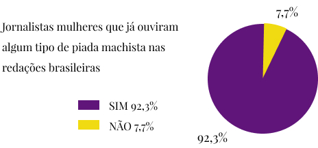
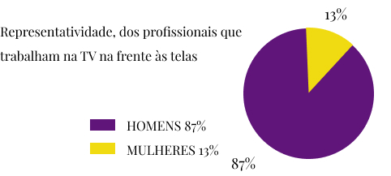
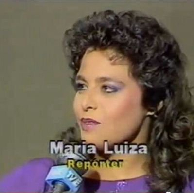

O Papel da Mulher na Editoria Esportiva
Beatriz Pessôa
Em uma profissão em que não há rotina, a carga horária é alta e o serviço é pesado, as mulheres também precisam driblar o preconceito masculino simplesmente para fazer seu trabalho. O problema dobra de tamanho quando se trata da editoria esportiva. Fato é que a luta incessante para as jornalistas se manterem em alto nível é enorme.

Uma pesquisa feita pela associação Gênero e Número, em parceria com a Associação Brasileira de Jornalismo Investigativo (Abraji), em 2017, revelou números elevados sobre casos de assédio moral e sexual que as profissionais sofrem em seus locais de trabalho. Nada menos que 92,3% das jornalistas afirmaram já ter ouvido algum tipo de piada machista nas redações brasileiras.

Os dados alarmantes não param por aí: 70,4% das jornalistas que responderam a pesquisa admitiram já ter recebido cantadas desconfortáveis no exercício da profissão e 70,2% das entrevistadas já presenciaram ou souberam de uma colega sendo assediada no local de trabalho, tanto por fontes quanto por outros jornalistas.
“Se você tiver o dom para as coisas, você faz tudo muito bem feito”, defende Maria Luiza, a primeira repórter de futebol na TV

Maria Luiza da Costa foi a primeira mulher a cobrir futebol na televisão brasileira. Sua primeira aparição no vídeo como repórter foi na Copa do Mundo de 1978, na Argentina. “Adorei a minha época como repórter de esportes. Eu não tinha rotina. Pegava sol, fazia treino em Marechal Hermes. Naquela época, os carros não tinham ar condicionado e a maquiagem escorria. Se você tiver o dom para as coisas, você faz tudo muito bem feito”, relembra a jornalista, hoje aposentada.
A jornalista, desde pequena, gostava de escrever e nutria uma paixão pelo esporte. Assim, na época do vestibular, entrou na faculdade de Comunicação e, ainda no começo da graduação, foi contratada como estagiária da Rádio Nacional, já na editoria esportiva. Seu primeiro ofício foi como repórter de campo, na cobertura dos clubes cariocas. “Por todo o conhecimento que eu já tinha de esporte, não foi difícil para mim”, conta Maria Luiza.
“Adorei a minha época como repórter de esportes. Eu não tinha rotina. Pegava sol, fazia treino em Marechal Hermes. Naquela época, os carros não tinham ar condicionado e a maquiagem escorria. Se você tiver o dom para as coisas, você faz tudo muito bem feito”
Pouco tempo depois, ela foi contratada pela Rede Globo, ainda como estagiária, e conquistou seu espaço. Maria Luiza mostrou seu talento e sua estrela brilhou na Copa de 1978. Ela foi como repórter para Córdoba e acompanhou o dia a dia de diversas seleções, como Alemanha, Peru, Irã e Tunísia. “Cada dia eu ia para um lugar e, quando chegava lá, todo mundo me olhava esquisito. A seleção do Irã foi a coisa mais engraçada. Fui fazer a chegada deles e eu estava de uniforme, sem véu, sem nada. Eles me cercaram para saber se meu pai e minha mãe me deixavam fazer aquilo, se eu não era casada e não tinha filhos e por que eu fazia um trabalho de homem e se tinha respeito. ‘Tem muito’, disse para eles. Eu tinha uma equipe grande, eles me tratavam superbem e tinham o maior carinho”, completa a jornalista.
Mesmo fazendo um excelente trabalho, Maria Luiza sofreu o infortúnio dos cortes repentinos que acontecem nas redações, sobretudo por ser mulher. “Quando chegou o fim do ano iam reduzir a equipe. Vamos mandar embora quem? A mulher, claro’, e eu saí de lá”, explica. Em 1979, foi contratada pela TV E, cobrindo esportes amadores. Lá, a ornalista trabalhou durante 19 anos. Maria Luiza casou-se com um cinegrafista e eles tiveram um filho. Ela optou por sair da reportagem, para dedicar mais tempo à família. Assim, pôde explorar uma área diferente da comunicação, que é a assessoria de imprensa. Ela trabalhou no Instituto Brasileiro do Meio Ambiente (IBAMA) até se aposentar.
Para quem está começando, Maria Luiza recomenda a editoria esportiva. Para ela, é a melhor área, mas alerta: “Tem que ler muito, tem que estar sempre informada e tem que checar a informação, isso é muito importante. Tem que encarar mesmo com seriedade”, finaliza.